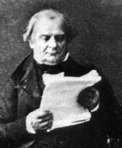

La termodinámica de Clapeyron
En 1834, Émile Clapeyron dedujo por primera vez la ley de los gases ideales, inspirado por los trabajos de otros químicos como Boyle y Charles. Esta ley relacionaba las variaciones que se producen en la presión, la temperatura y el volumen de un gas. Esta ley partía de los fundamentos de la teoría cinética de los gases, que consideraba a las moléculas de gas pequeñas masas es movimiento que producían colisiones elásticas entre sí, es decir, que al chocar entre sí no perdían energía, y salían despedidas con la misma velocidad. También hizo una gran contribución con la segunda ley de la termodinámica, que dice que un sistema tiende a alcanzar el equilibrio aumentando su desorden. Esto es, al menos, lo que nos dice la historia. |
 |
La realidad, sin embargo, es muy distinta. Esta teoría no fué concebida como tal, sino como una hipótesis curiosa: la ley del gallinero ideal. Ha sido recientemente averiguado, gracias a la magnífica labor de restauración de algunos historiadores franceses, que durante su estancia en San Petersburgo, Clapeyron estuvo hospedándose en una granja durante un tiempo, y fué allí donde tuvo ocasión de idear su teoría.
Clapeyron le preguntó al granjero cómo lograba mantener a las gallinas resguardadas del frío invernal, y el granjero respondió que el gallinero estaba bien cerrado, y en él las gallinas se movían. Clapeyron se preguntó si era el movimiento de las gallinas lo que producía el calor, y se dijo que, de ser así, las gallinas dejarían de moverse poco a poco. No obstante, las gallinas seguían moviéndose, y así fué como se le ocurrió otra explicación: las gallinas se espantan unas de otras. Esta presunción es también una de las que explica la "segunda ley de la termodinámica". Así, Clapeyron teorizó que las gallinas, al chocar con cierta velocidad, rápidamente se alejaban con la misma velocidad.
Por tanto, Clapeyron hizo las siguientes consideraciones: el calor que las gallinas necesitan se puede calcular conociendo el número de gallinas (n), la temperatura a la que están (T) y cuánto hay que calentar una gallina para que su temperatura aumente un grado, cierta constante que depende del tipo de gallina, y que Clapeyron llamó R. Dicho calor (Q) vendría dado por Q=n·R·T. Por otro lado, Clapeyron pensó que el movimiento de las gallinas venía dado por el volumen del gallinero (las gallinas se mueven más con más espacio) y por la excitación de las gallinas, que es proporcional a la cantidad de pienso (p) que hay en el gallinero, y asumió que el movimiento de las gallinas (W) era tal que W=p·V
Por último, Clapeyron hizo los siguientes cálculos:
- El movimiento de las gallinas es cero cuando no tienen pienso: W=p·V=0·V=0
- Al aumentar el movimiento de las gallinas se aumenta el calor que producen: ΔW=ΔQ
- Por lo tanto, la diferencia entre ambas magnitudes es constante: Q-W=cte
- Cuando no hay pienso, esta constante puede calcularse así: Q-W=n·R·Treposo-0·V=n·R·Treposo
- En general, Q-W=n·R·T-V·p=n·R·Treposo
- Por tanto, para todo gallinero cerrado, p·V=n·R·T-n·R·Treposo=n·R·(T-Treposo)=n·R·ΔT
Sin embargo, Clapeyron no se quedó ahí. Le pareció curioso que las gallinas no se juntaran para darse calor, aunque sí lo hacían con los huevos, y esto le llevó a plantear la otra gran teoría que se le atribuye. Clapeyron definió una magnitud nueva: la seguridad de las gallinas, y comprobó experimentalmente que las gallinas se sentían más seguras cuanto más espacio desocupado tenían a su alrededor. Todas las gallinas trataban continuamente de sentirse más seguras, y eso lo lograban alejándose unas de otras cuando se aproximaban demasiado. Por lo tanto, si se dejaba a las gallinas solas en un gallinero cerrado (o aislado) se cumplía que la seguridad del conjunto aumentaba: ΔS>0
Cuando Clapeyron volvió a Francia, descubrió la comunidad de químicos y les expuso sus teorías. Estos químicos franceses se dieron cuenta de que la teoría del gallinero ideal era un modelo de gas mejor que cualquiera de los que habían pensado hasta entonces, y se aceptó rápidamente. Clapeyron aprovechó su fama para alejarse de la química y tratar de construirse una reputación como físico e ingeniero.